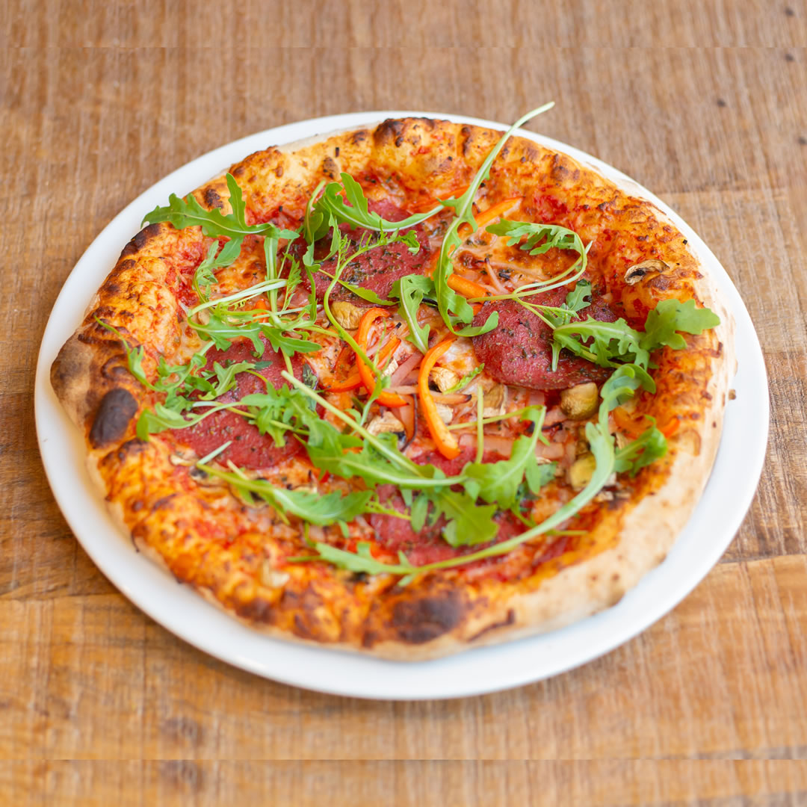
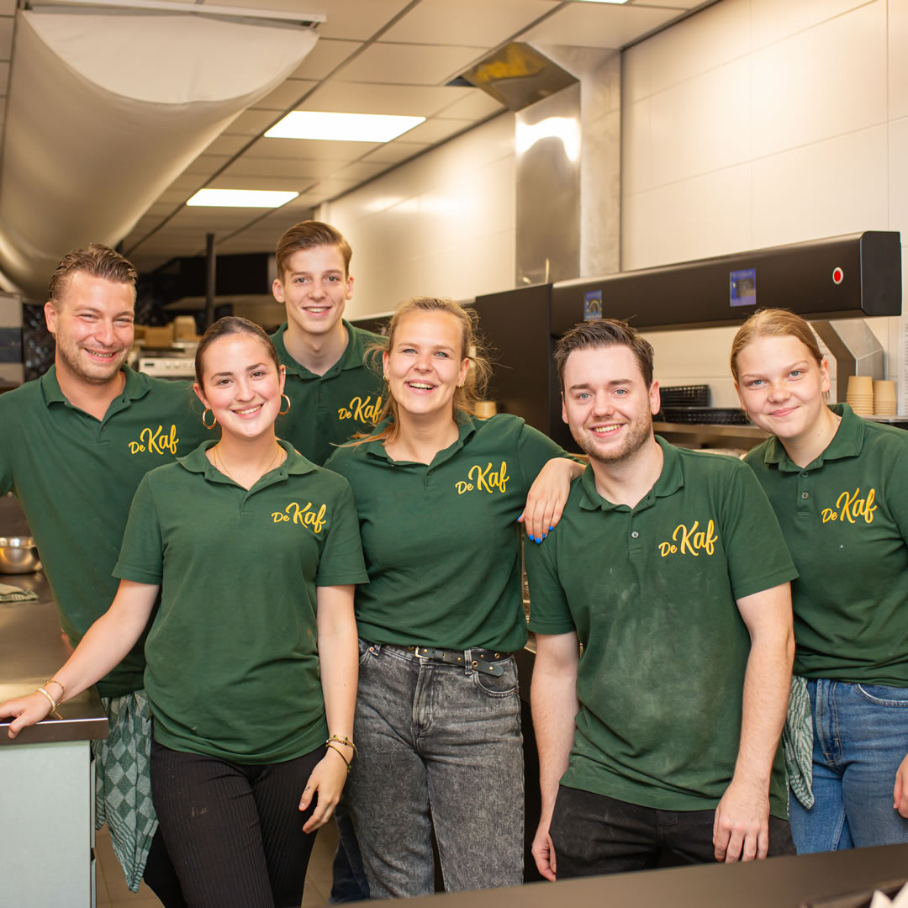
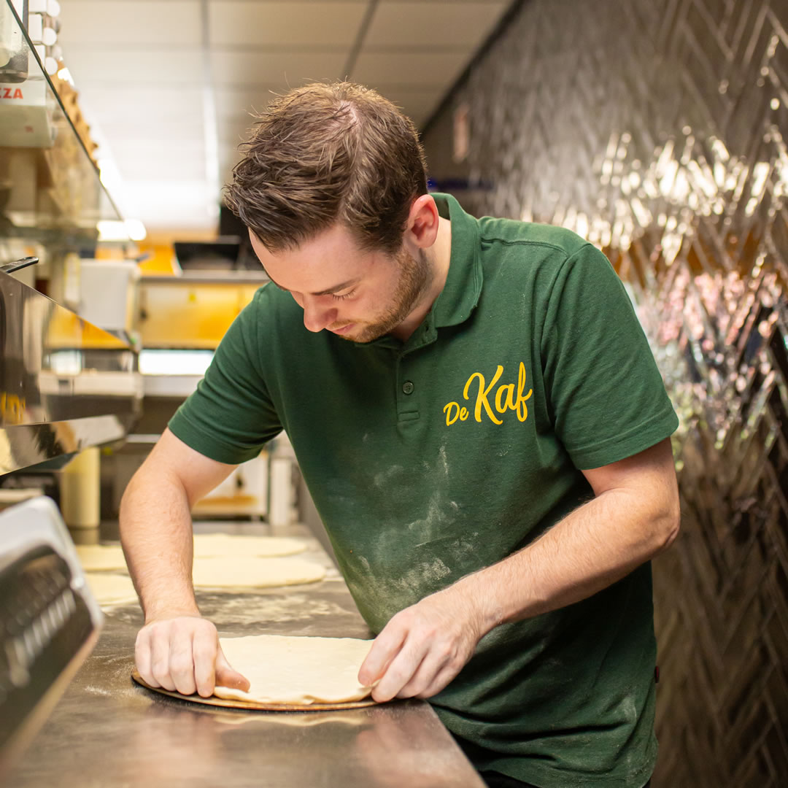
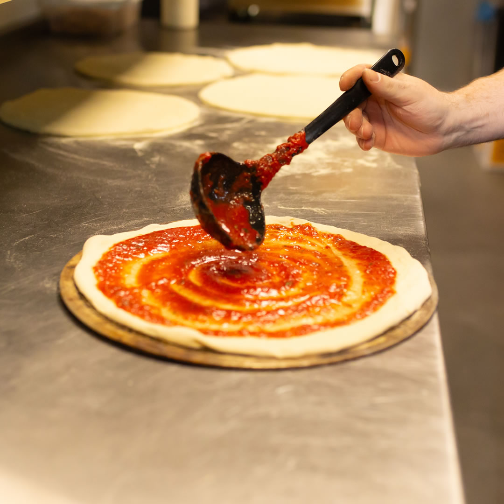
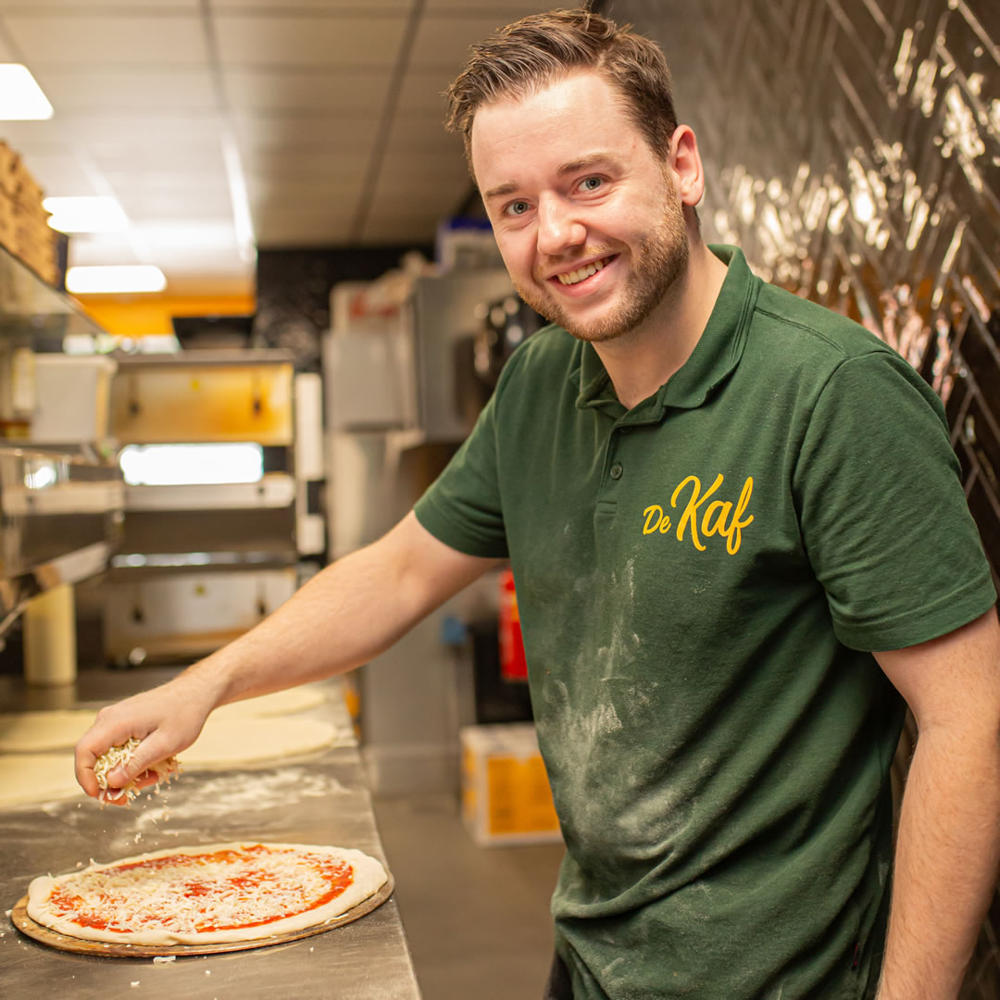
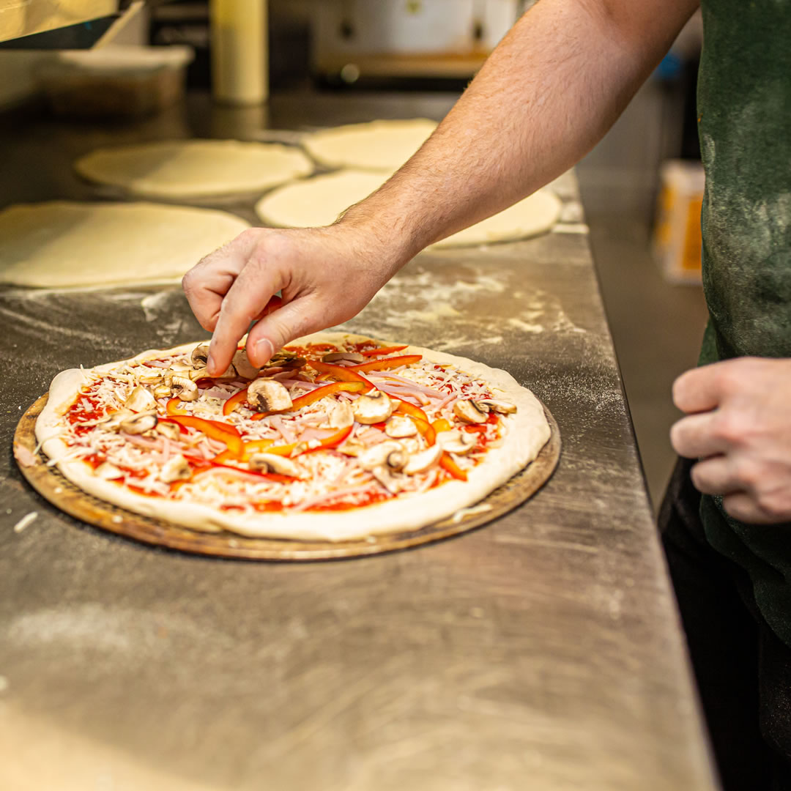

Elke dag open van 11.30 tot 21.00 uur
Handgesneden friet, verse pizza en ons beroemde stoofvlees.
Cafetaria De Kafmolen in Schijndel. Haal je bestelling op aan de Kloosterstraat of laat het thuis bezorgen.
Liever bellen? 073 547 91 23


Kwaliteit en smaak, bewust gekozen
De Kafmolen kiest bewust voor kwaliteit en smaak. Naast snacks van A-merken vind je bij ons volop huisgemaakte en eigen producten. Tegen onze handgesneden friet, belegde broodjes, verse (maaltijd)salades en zelfgemaakte sauzen kan niets op!
Ook ambachtelijke kipproducten en huisgemaakte hamburgers behoren tot onze specialiteiten. En dan hebben we het nog niet eens over ons beroemde stoofvlees.
De Kafmolen? Natuurlijk!
- Handgesneden friet, vers, Frans of twister
- Zelfgemaakt sauzen, broodjes en stoofvlees
- Elke maand een nieuwe pizza en een nieuw frietje
Zo maken we je pizza
Ambachtelijk en vers, gewoon bij ons in de keuken in Schijndel.

1 Deeg met de hand uitdrukken
2 Tomatensaus erover
3 Kaas erop
4 Beleggen- 5 Klaar om te smullen
Bestellen
Bestel online via onze eigen webshop, of bel ons even.
Voor bedrijven en grote groepen
Voor bedrijven of grote groepen hebben we speciaal een Excel-bestellijst gemaakt. Handig om rond te sturen binnen een grote groep. Mail de ingevulde lijst naar info@dekafmolen.nu, dan sturen we je een bevestiging en nemen we de bestelling in behandeling.
Stuur je bestellijst op tijd en bel ons gerust even na. We zien jullie natuurlijk ook graag in de cafetaria. Tot snel!
Kom langs
De KafmolenKloosterstraat 1A
5481 BE Schijndel
073 547 91 23
info@dekafmolen.nu
Openingstijden
| Maandag | 11.30 – 21.00 |
|---|---|
| Dinsdag | 11.30 – 21.00 |
| Woensdag | 11.30 – 21.00 |
| Donderdag | 11.30 – 21.00 |
| Vrijdag | 11.30 – 21.00 |
| Zaterdag | 11.30 – 21.00 |
| Zondag | 11.30 – 21.00 |